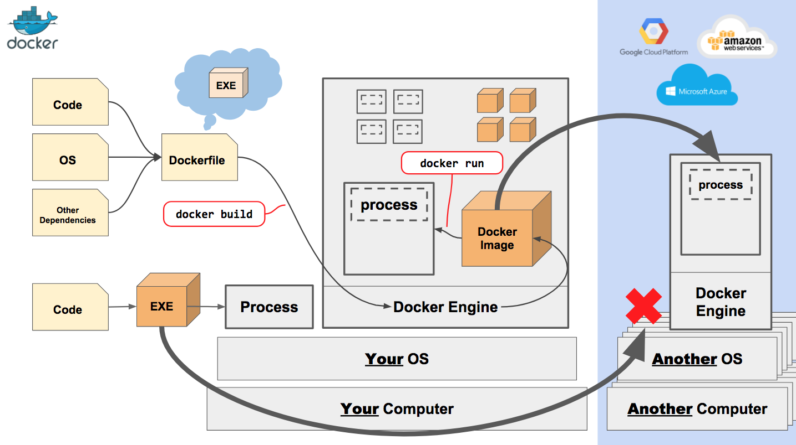

Introduction to
Agenda
- Fast Overview
- The Challenge
- Solution
- Separation of Concerns
- VMs vs Containers
- Docker Hub
- Advanced Tools
- Workflow
- DEMO
Fast Overview

The Challenge

Matrix from Hell

Cargo Transport Pre-1960

Also a Matrix from Hell

Solution: Intermodal Shipping Container

Docker is a Container System for Code

Deployment Matrix

Why it Works: Separation of Concerns

Why Developers Care
Build once and run anywhere:
- A clean, secure and predictable environment for apps
- No worries about missing dependencies
- Automate testing and packaging
- Reduce/eliminate concerns about compatibility on different platforms
Why Operations Care
Configure once and run anything:
- Make the entire lifecycle more efficient, consistent, and repeatable.
- Eliminate inconsistencies between development, test, production, and customer environments.
- Speed and reliability of continuous deployment and continuous integration systems.
- Significant performance, lower costs, deployment, and portability (in comparision to VMs).
Architecture

VMs vs Containers

Why are Docker Containers Lightweight?

What are the Basics of a Docker System?

Changes and Updates

Advanced Tools
- https://awesome-docker.netlify.com/
- Docker Compose: a tool for defining and running multi-container Docker applications
- Orchestration: native clustering tool which turns a pool of Docker hosts into a single, virtual Docker host (Kubernetes, Mesos, Swarm etc.)
- Docker Cloud: deploying node clusters and sevices to cloud service providers (Azure, AWS, DigitalOcean, etc.)
Possible Workflow
Demo Time

Want to Learn More?
- Docs: docs.docker.com
- Hub: hub.docker.com
- Cloud: cloud.docker.com
- Github: dotcloud/docker
- Google Group: docker-user
- Twitter: @docker
- Meetups: www.docker.io/meetups